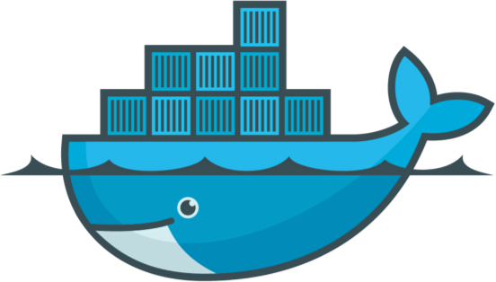
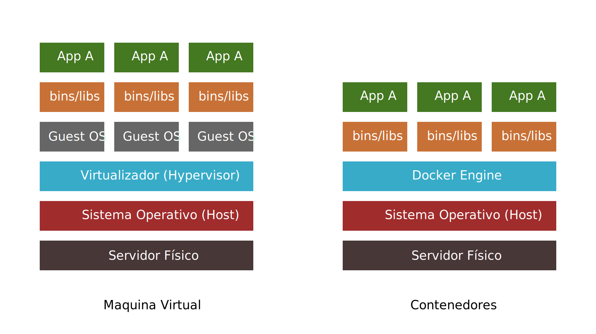

Introducción a Docker

Carlos E. Caballero B.
github.com/ccaballero/presentations
¿Que es Docker?
Es un proyecto open source para empaquetar,
transportar, y ejecutar cualquier aplicación
como un contenedor.
¿Que es un contenedor?
Es un nuevo modelo de virtualización que crea una
capa de abstracción con el sistema operativo.
Con el nuevo modelo de contenedores podemos
abstraernos del sistema operativo donde corre
el motor de docker.
Virtualización vs Contenedores
Ventajas del manejo de contenedores
- Las instancias se inician en segundos y son
facilmente replicables. - Consume menos recursos de hardware y
estos van exclusivamente a la aplicación. - Es fácil de automatizar e integrar en
ambientes de integración continua. - Tanto las imagenes como las instancias
suelen ocupar menos espacio que las
maquinas virtuales. - Existen imagenes oficiales y de la
comunidad que pueden descargarse y
modificarse libremente.
Practica #1
Instalando Docker
- Debian Linux
- https://docs.docker.com/install/linux/docker-ce/debian/
- Ubuntu Linux
- https://docs.docker.com/install/linux/docker-ce/ubuntu/
- Fedora Linux
- https://docs.docker.com/install/linux/docker-ce/fedora/
- Windows
- https://store.docker.com/editions/community/docker-ce-desktop-windows
- Mac
- https://store.docker.com/editions/community/docker-ce-desktop-mac
Comandos basicos
- docker version
~ $ docker version
Client:
Version: 18.06.0-ce
API version: 1.38
Go version: go1.10.3
Git commit: 0ffa825
Built: Sat Jul 28 21:17:51 2018
OS/Arch: linux/amd64
Experimental: false
Server:
Engine:
Version: 18.06.0-ce
API version: 1.38 (minimum version 1.12)
Go version: go1.10.3
Git commit: 0ffa825
Built: Sat Jul 28 21:17:12 2018
OS/Arch: linux/amd64
Experimental: false
Comandos basicos
- docker info
~ $ docker info
Containers: 14
Running: 0
Paused: 0
Stopped: 14
Images: 28
Server Version: 18.06.0-ce
Storage Driver: btrfs
Build Version: Btrfs v4.17
Library Version: 102
Logging Driver: json-file
Cgroup Driver: cgroupfs
Plugins:
Volume: local
Network: bridge host macvlan null overlay
Log: awslogs fluentd gcplogs gelf journald json-file logentries splunk syslog
Swarm: inactive
Runtimes: runc
Default Runtime: runc
....
Componentes de Docker

Contenedores e Imágenes
Una imagen es un archivo inerte, inmutable, que es
esencialmente una instantánea de un contenedor.
Las
imágenes se crean con el comando de build
y producirán un contenedor cuando se inicie con
la run. Las imágenes se almacenan en un
registro
de docker como
registry.hub.docker.com.
Para usar una metáfora de programación, si una
imagen es
una clase, entonces un
contenedor es una instancia de un
objeto en tiempo de ejecución. Es de esperar que los
contenedores utilicen Docker; son encapsulados ligeros
y
portátiles de un entorno en el que ejecutar
aplicaciones.
Comandos basicos
- docker search
~ $ docker search hello-world
NAME DESCRIPTION STARS OFFICIAL AUTOMATED
hello-world Hello World! (an example of minimal Dockeriz… 624 [OK]
kitematic/hello-world-nginx A light-weight nginx container that demonstr… 108
tutum/hello-world Image to test docker deployments. Has Apache… 53 [OK]
dockercloud/hello-world Hello World! 14 [OK]
hypriot/armhf-hello-world Hello World! (an example of minimal Dockeriz… 6
crccheck/hello-world Hello World web server in under 2.5 MB 5 [OK]
marcells/aspnet-hello-world ASP.NET vNext - Hello World 5 [OK]
armhf/hello-world Hello World! (an example of minimal Dockeriz… 5
bonomat/nodejs-hello-world a simple nodejs hello world container 3 [OK]
ppc64le/hello-world Hello World! (an example of minimal Dockeriz… 2
carinamarina/hello-world-app This is a sample Python web application, run… 1 [OK]
kornkitti/express-hello-world Node.js Express Hello World : https://github… 1
hello-seattle Hello from DockerCon 2016 (Seattle)! 1 [OK]
infrastructureascode/hello-world A tiny "Hello World" web server with a healt… 0 [OK]
gscrivano/hello-world hello world example system container 0 [OK]
ansibleplaybookbundle/hello-world-apb An APB which deploys a sample Hello World! a… 0 [OK]
s390x/hello-world Hello World! (an example of minimal Dockeriz… 0
markmnei/hello-world-java Automated build of Hello World Java 0 [OK]
burdz/hello-world-k8s To provide a simple webserver that can have … 0 [OK]
kevindockercompany/hello-world 0
arm32v7/hello-world Hello World! (an example of minimal Dockeriz… 0
uniplaces/hello-world 0
ansibleplaybookbundle/hello-world-db-apb An APB which deploys a sample Hello World! a… 0 [OK]
lkungs/docker-hello-world Simple Hello World Example 0 [OK]
stumacsolutions/hello-world-container 0
Practica #2
Hello World
~ $ docker run hello-world
Unable to find image 'hello-world:latest' locally
latest: Pulling from library/hello-world
9db2ca6ccae0: Pull complete
Digest: sha256:4b8ff392a12ed9ea17784bd3c9a8b1fa3299cac44aca35a85c90c5e3c7afacdc
Status: Downloaded newer image for hello-world:latest
Hello from Docker!
This message shows that your installation appears to be working correctly.
To generate this message, Docker took the following steps:
1. The Docker client contacted the Docker daemon.
2. The Docker daemon pulled the "hello-world" image from the Docker Hub.
(amd64)
3. The Docker daemon created a new container from that image which runs the
executable that produces the output you are currently reading.
4. The Docker daemon streamed that output to the Docker client, which sent it
to your terminal.
To try something more ambitious, you can run an Ubuntu container with:
$ docker run -it ubuntu bash
Share images, automate workflows, and more with a free Docker ID:
https://hub.docker.com/
For more examples and ideas, visit:
https://docs.docker.com/engine/userguide/
Comandos basicos
- docker ps
- docker stop
- docker rm
~ $ docker ps --all
CONTAINER ID IMAGE COMMAND CREATED STATUS PORTS NAMES
08c8054814d5 hello-world "/hello" 2 minutes ago Exited (0) 2 minutes ago compassionate_curie
~ $ docker stop 08c8054814d5
08c8054814d5
~ $ docker rm 08c8054814d5
08c8054814d5
~ $ docker ps --all
CONTAINER ID IMAGE COMMAND CREATED STATUS PORTS NAMES
Comandos basicos
- docker images
- docker rmi
~ $ docker images
REPOSITORY TAG IMAGE ID CREATED SIZE
node 9.11.2 08a8c8089ab1 4 weeks ago 673MB
hello-world latest 2cb0d9787c4d 5 weeks ago 1.85kB
node 9.11.2-alpine a56170f59699 6 weeks ago 68.5MB
alpine latest 11cd0b38bc3c 6 weeks ago 4.41MB
~ $ docker rmi 2cb0d9787c4d
Untagged: hello-world:latest
Untagged: hello-world@sha256:4b8ff392a12ed9ea17784bd3c9a8b1fa3299cac44aca35a85c90c5e3c7afacdc
Deleted: sha256:2cb0d9787c4dd17ef9eb03e512923bc4db10add190d3f84af63b744e353a9b34
Deleted: sha256:ee83fc5847cb872324b8a1f5dbfd754255367f4280122b4e2d5aee17818e31f5
Practica #3
Alpine
~ $ docker pull alpine:latest
latest: Pulling from library/alpine
Digest: sha256:7043076348bf5040220df6ad703798fd8593a0918d06d3ce30c6c93be117e430
Status: Image is up to date for alpine:latest
~ $ docker run -d -it --name pr03 alpine
1bfcba7ccf9bd424ed88449bbd191afe0faaa5da26bcf0678c0df2481ece0944
~ $ docker ps --all
CONTAINER ID IMAGE COMMAND CREATED STATUS PORTS NAMES
1bfcba7ccf9b alpine:latest "/bin/ash" 17 seconds ago Up 15 seconds pr03
~ $ docker exec -it pr03 /bin/ash
/ # ls -l
total 0
drwxr-xr-x 1 root root 850 Jul 5 14:47 bin
drwxr-xr-x 5 root root 360 Aug 18 09:26 dev
drwxr-xr-x 1 root root 530 Aug 18 09:26 etc
drwxr-xr-x 1 root root 0 Jul 5 14:47 home
...
drwxr-xr-x 1 root root 40 Jul 5 14:47 usr
drwxr-xr-x 1 root root 78 Jul 5 14:47 var
/ # apk add bash
fetch http://dl-cdn.alpinelinux.org/alpine/v3.8/main/x86_64/APKINDEX.tar.gz
fetch http://dl-cdn.alpinelinux.org/alpine/v3.8/community/x86_64/APKINDEX.tar.gz
(1/5) Installing ncurses-terminfo-base (6.1-r0)
(2/5) Installing ncurses-terminfo (6.1-r0)
(3/5) Installing ncurses-libs (6.1-r0)
(4/5) Installing readline (7.0.003-r0)
(5/5) Installing bash (4.4.19-r1)
Executing bash-4.4.19-r1.post-install
Executing busybox-1.28.4-r0.trigger
OK: 13 MiB in 18 packages
/ # bash
bash-4.4#
Comandos basicos
- docker commit
~ $ docker ps --all
CONTAINER ID IMAGE COMMAND CREATED STATUS PORTS NAMES
8b05749dddd8 alpine "/bin/sh" 58 seconds ago Up 55 seconds pr03
~ $ docker commit 8b05749dddd8 myimage:1.0.0
sha256:3b91916c72e1bc4b13f7cd17a903064dab8762c2e1bf51891ef3508f60eac727
~ $ docker images
REPOSITORY TAG MAGE ID CREATED SIZE
myimage 1.0.0 b91916c72e1 8 seconds ago 33.9MB
alpine latest 1cd0b38bc3c 6 weeks ago 4.41MB
Practica #4
PHP
~ $ mkdir php
~ $ vim php/pr04.php
~ $ more php/pr04.php
<?php
echo 'Hello Woooooorld!';
~ $ docker pull php:5-alpine
5-alpine: Pulling from library/php
911c6d0c7995: Already exists
2527cc05836d: Pull complete
3299172a2d6d: Pull complete
05782106624f: Pull complete
65a91d7751ba: Pull complete
f92e58e239bb: Pull complete
f34c8a19910d: Pull complete
52a2030e9477: Pull complete
Digest: sha256:10c4ea2603ef67d060ca5e1cef7b8e87f4a4bb251bedf16b2a855be460a4df33
Status: Downloaded newer image for php:5-alpine
~ $ docker run -it --rm --name pr04 -v "$PWD"/php:/srv -w /srv php:5-alpine php pr04.php
Hello Woooooorld!
Practica #5
PHP/Apache
~/php $ docker pull php:7.2.8-apache
7.2.8-apache: Pulling from library/php
be8881be8156: Already exists
69a25f7e4930: Pull complete
65632e89c5f4: Pull complete
cd75fa32da8f: Pull complete
15bc7736db11: Pull complete
b2c40cef4807: Pull complete
f3507e55e5eb: Pull complete
e6006cdfa16b: Pull complete
a3ed406e3c88: Pull complete
745f1366071d: Pull complete
bdfcada64ad8: Pull complete
86f2b695cc77: Pull complete
5f634a03970a: Pull complete
a329a7ebde19: Pull complete
fb3d2649f534: Pull complete
Digest: sha256:8188b38abe8f3354862845481452cd3b538bc0648e3c5cdef4ef9ee9365fe2d3
Status: Downloaded newer image for php:7.2.8-apache
~ $ docker run --name pr05 -v "$PWD"/php:/var/www/html -p 127.0.0.1:9000:80 php:7.2.8-apache
AH00558: apache2: Could not reliably determine the server's fully qualified domain name, using 172.17.0.2. Set the 'ServerName' directive globally to suppress this message
AH00558: apache2: Could not reliably determine the server's fully qualified domain name, using 172.17.0.2. Set the 'ServerName' directive globally to suppress this message
[Sat Aug 18 11:26:04.041338 2018] [mpm_prefork:notice] [pid 1] AH00163: Apache/2.4.25 (Debian) PHP/7.2.8 configured -- resuming normal operations
[Sat Aug 18 11:26:04.041445 2018] [core:notice] [pid 1] AH00094: Command line: 'apache2 -D FOREGROUND'
172.17.0.1 - - [18/Aug/2018:11:26:06 +0000] "GET / HTTP/1.1" 200 24100 "-" "Mozilla/5.0 (X11; Linux x86_64) AppleWebKit/537.36 (KHTML, like Gecko) Chrome/68.0.3440.84 Safari/537.36"
Construcción de Imagenes de Docker I
Un Dockerfile es un fichero de texto donde indicamos
los
comandos que queremos ejecutar sobre una imagen
base para
crear una nueva imagen.
El comando docker build construye la
nueva imagen
leyendo las instrucciones del fichero
dockerfile
y la información de un entorno,
que para nosotros
va a ser un directorio (aunque también
podemos
guardar información, por ejemplo, en un repositorio
git).
Construcción de Imagenes de Docker II
La creación de la imagen es ejecutada por el docker
engine,
que recibe toda la información del entorno, por lo
tanto es
recomendable guardar el dockerfile en un directorio
vacío y
añadir los ficheros necesarios para la creación de
la imagen.
El comando docker build ejecuta las instrucciones
de un
dockerfile línea por línea y va mostrando los
resultados
en pantalla.
Tenemos que tener en cuenta que cada instrucción ejecutada
crea una imagen intermedia, una vez finalizada la construcción
de la imagen nos devuelve su id.
La creación de imágenes intermedias generadas por la
ejecución de cada instrucción del Dockerfile, es un mecanismo
de caché, es decir, si en algún momento falla la creación de
la imagen, al corregir el Dockerfile y volver a construir la imagen,
los pasos que habían funcionado anteriormente no se repiten ya que
tenemos a nuestra disposición las imágenes intermedias, y el proceso
continúa por la instrucción que causó el fallo.
Practica #6
Dockerfile
~/php $ more hello.sh
#!/bin/bash
echo 'Hello Dockerfile'
~/php $ more dockerfile
FROM alpine
COPY hello.sh /srv
RUN chmod +x /srv/hello.sh
RUN apk update && \
apk upgrade
RUN apk add bash wget vim
WORKDIR /srv
CMD ["/srv/hello.sh"]
~/php $ docker build -t mydockerfile:1.0.0 -f dockerfile .
Sending build context to Docker daemon 6.144kB
Step 1/7 : FROM alpine
---> 11cd0b38bc3c
Step 2/7 : COPY hello.sh /srv
---> 346961757075
Step 3/7 : RUN chmod +x /srv/hello.sh
---> Running in 03ebd6bfb9b0
Removing intermediate container 03ebd6bfb9b0
---> 2215f50aaa74
Step 4/7 : RUN apk update && apk upgrade
---> Running in 63f6834cee41
fetch http://dl-cdn.alpinelinux.org/alpine/v3.8/main/x86_64/APKINDEX.tar.gz
...
Executing busybox-1.28.4-r1.trigger
OK: 40 MiB in 21 packages
Removing intermediate container 4e89b4143df3
---> 40a03807e283
Step 6/7 : WORKDIR /srv
---> Running in eba0409fba22
Removing intermediate container eba0409fba22
---> f30e4aab0bdf
Step 7/7 : CMD ["/srv/hello.sh"]
---> Running in 45775261824b
Removing intermediate container 45775261824b
---> 9d7fe5a6d66f
Successfully built 9d7fe5a6d66f
Successfully tagged mydockerfile:1.0.0
~/php $ docker run mydockerfile:1.0.0
Hello Dockerfile
Bibliografia
- Introduccion a Docker
- https://es.slideshare.net/DatioBD/introduccin-a-docker-81412967
- Introduccion a Docker
- https://es.slideshare.net/opencanarias/introduccin-a-docker-59061353
- Introduccion a Docker
- https://es.slideshare.net/kassanmoor/introduccin-a-docker
- Docker Images vs. Containers
- https://code.i-harness.com/es/q/16a2b6d
- Quickstart: Compose and WordPress
- https://docs.docker.com/compose/wordpress/